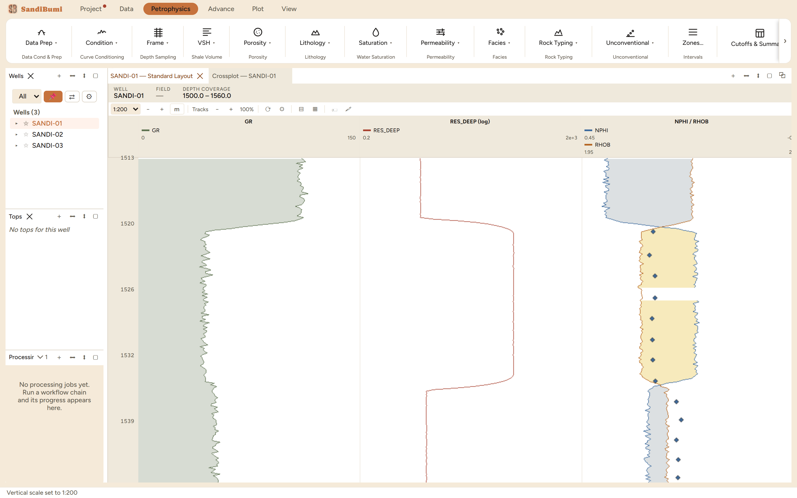
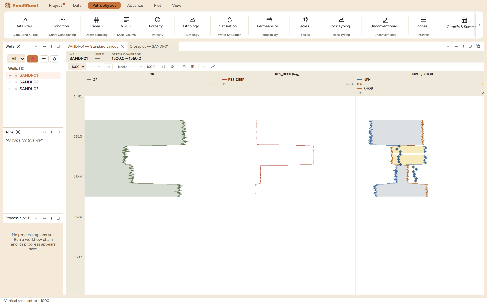

The log view is the working surface everything else reports to: a
depth-indexed strip of tracks drawn at a true vertical scale. Every module
output, every conditioned curve, every core point ends up being judged here,
because a statistic can hide what a track shows in one glance, a spike, a
shoulder, a washout, a crossover that starts one sample too early. Open one
per well of interest and keep it open; the other panels exist to feed it.
The pane
The header states the well, the field and the stored depth coverage
(SANDI-01 covers 1500.0–1560.0 m). The toolbar under it owns the display:
the vertical scale select (1:200 for reading beds, 1:1000 to see the whole
well at once), track width, the depth-unit badge, track add/remove, and the
pin. Everything there acts on this view only; there are no ribbon controls
that target "the active log view".
Following the selection. A log view follows the selected well in
the Wells pane unless its own pin is pressed; clicking a top in the Tops
pane scrolls every view to that depth.
Scale is a statement, not a zoom level. 1:200 means 1 cm of
screen is 2 m of rock, the same ratio the composite prints at. Plain
scroll pans; Ctrl+scroll zooms at the cursor.
Layouts are named documents. The built-in Standard layout ships
GR, deep resistivity on a log scale, and the NPHI/RHOB crossover pair; a
layout you assemble is saved by name and recalled on any well.

Standard layout at 1:200. The NPHI/RHOB track positions each
curve on its own scale, which is what makes the crossover shading
meaningful; core plug points ride the same track as diamonds.
Step by step
Select a well in the Wells pane; the log view builds on the Standard
layout at its default scale.
Set the scale to the question: 1:1000 first to see the whole section
and pick where to work, then 1:200 on the interval that matters.
Add tracks for what you are checking (module outputs resolve by name,
imported sets plot on their own stored depths), and right-click a curve
to edit its style, scale or fill without leaving the view.
Save the arrangement as a named layout once it earns its keep; the
composite and report reuse the same track definitions.

The same well at 1:1000: sixty metres in one screen. The two
clean sands, the shale between them, and the gas-sand crossover are all
legible before any module has run.
Reading the result
Three display conventions carry meaning and are worth knowing by name.
Crossover shading is drawn between two curves in the same track, each
on its own declared scale; where they cross inside a sample the fill splits at
the crossing, so the colour boundary is the crossover, not the nearest sample.
Step curves hold each value down to the next sample instead of drawing
a diagonal, which is the honest display for block-averaged or zone-constant
curves. Class curves (facies) render as full-width colour blocks rather
than a wiggle, since the numbers are labels, not magnitudes.
QC and pitfalls
A gap is a gap. Missing samples break the curve rather than
bridging it, and core points that sit off-scale are skipped, never clamped
to the track edge. If a curve looks continuous where you expect a washout,
check which set it came from before trusting it.
Check the scale before comparing wells. Two views at different
vertical scales make the same bed look different; the correlation panel
exists for side-by-side reading on one datum.
The screen and the print agree by construction. The composite
export draws the same tracks with the same geometry at the same ratios,
so what you QC here is what the deliverable shows.